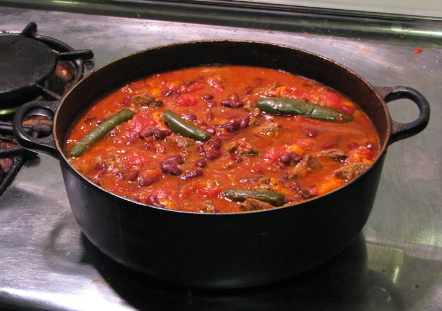

Frugal Chili

Description
Oh wowie, I can't describe how good this chili is, you just need to make it! One
of the most deliscious and cost effective meals I know. Much of this recipe utilizes non-perishable goods (canned tomatos, spices, beans, corn, etc). I enjoy this aspect because I save money on deals for non-perishable items. A big pot of it can be made effortlessly and eating it multiple days in a row doesn't get old.
Ingredients
- Cooking Spray
- 1.5 lbs of ground sirloin
- 2 jalapeno peppers
- 1 tbs canola oil
- 1 large chopped onion
- 2 large poblano chiles
- 8 garlic cloves minced
- 1 12 oz Mexican beer
- 1 tbs chili powder
- ¾ teaspoon kosher salt
- 2 ½ cups lower-sodium marinara sauce (such as McCutcheon's)
- 1 cup fat-free, lower-sodium chicken broth
- 2 (15-ounce) cans no-salt-added kidney beans, rinsed and drained
- 1 (14.5-ounce) can diced fire-roasted tomatoes, undrained
- 3 ounces sharp cheddar cheese, shredded (about 3/4 cup, packed)
- ½ cup light sour cream
- ¼ cup fresh cilantro leaves